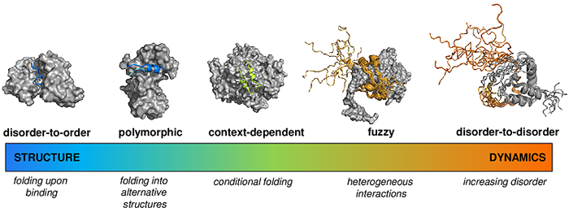

|
|
|
Fuzzy protein interactions
Cellular processes adapt to the environmental conditions, so as protein interactions adapt to the cellular context. Similarly to conformational ensembles of protein structures, the bound state of proteins must also be represented by an ensemble of bound conformations, which in addition to structural variations often involves variations in contact patterns. Therefore, a specific partnership can be defined by a set of interactions, out of which the populations most suitable to the cellular conditions are selected. Fuzzy interactions depend on the context, such as tissue, cellular localisation, developmental stage, local composition of the compartment, ion concentration, posttranslational modifications, solvent, and change accordingly. Context-dependent activities cannot be described by deterministic structure-function relationships.

P. Tompa and M Fuxreiter (2008) Fuzzy complexes: polymorphism and structural disorder in protein–protein interactions. Trends in Biochem. Sci 33, 2-8
Fuxreiter M (2018) Fuzziness in protein interactions - A historical perspective. J. Mol. Biol. 430, 2278-2287.
Fuxreiter M (2018) Towards a stochastic paradigm: from fuzzy ensembles to cellular functions. Molecules 23, E3008. doi: 10.3390/molecules23113008
M Fuxreiter (2012) Fuzziness: linking regulation to protein dynamics. Mol Biosystems 8, 168-177.
Prediction of fuzzy interactions
As proteins may populate ordered and disordered states to different extents depending on their partners and cellular conditions, we aim to simultaneously estimate the probability of the folding upon binding (disorder-to- order transition), and the probability that the interacting proteins remain disordered in their bound states (disorder-to-disorder transitions). We have developed the FuzPred method, a sequence-based prediction algorithm to estimate the probabilities of different binding modes using a dataset representing 2157 complexes. We found that fuzzy interactions originate from local sequence compositions, lacking the bias for ordered bound states. We demonstrated that the amino acid sequences of proteins can encode a wide range of conformational changes upon binding, including transitions from disordered to ordered and from disordered to disordered states, which can thus be predicted without specifying the binding partners.
M. Miskei, A Horvath, M. Vendruscolo, M Fuxreiter (2020) Sequence-Based Prediction of Fuzzy Protein Interactions J. Mol. Biol. 432, 2289-2303
Binding mode landscapes
It has been increasingly recognised that proteins may sample both ordered and disordered binding modes in their specific assemblies, and can change binding mode according to the cellular context. We have demonstrated that binding mode variability or promiscuity is also encoded in the sequence. As illustrated by the p53 tumor suppressor, the C-terminal peptides exhibit strong preference for disordered binding modes, the oligomerisation domain for ordered binding modes with structural polymorphism, whereas the mdm2 and dna recognition sites are inducible and only adopt folded structures with their specific partners or under a particular context. Therefore, when aim to predict interactions from sequence, we need to estimate the interaction behavior, which characterises both the binding mode, whether the regions is structured or disordered in the complex, and the variability of such binding mode, termed as the binding mode entropy.
A. Horvath, M. Miskei, V. Ambrus, M. Vendruscolo, M Fuxreiter (2020) Sequence-based prediction of protein binding mode landscapes. PLoS Comp Biol 16, e1007864
Fuzzy protein interactions in higher-order structures
Fuzzy interactions are critical to regulated formation of higher-order structures ranging from solid-like amyloids to liquid-like ribonucleoprotein granules. All higher-order assemblies, even the most static ones, exhibit structural multiplicity, polymorphism, and/or dynamic disorder and can be considered as fuzzy structures. In the case of static polymorphism, alternative conformations of the same interacting elements are stabilized within the assembly. In the case of dynamic disorder, the disordered regions retain conformational freedom within the assembly and will be referred to as fuzzy regions. These dynamic disordered regions within higher-order structures may link separate binding modules to increase their local concentration, exert transient interactions to influence adjacent binding elements, facilitate allostery, or promote intramolecular autoinhibition. The fuzzy interactions are further modulated by posttranslational modifications or alternative splicing to shift between different functional states.
Wu, H, Fuxreiter M (2016) The Structure and Dynamics of Higher-Order Assemblies: Amyloids, Signalosomes, and Granules. Cell 165, 1055-1066
M Fuxreiter*, P Tompa, I Simon, VN Uversky, JC Hansen, F Asturias (2008) Malleable machines take shape in eukaryotic transcription regulation. Nat Chem Biol 4, 728-737
Linking biological activity and conformational ensembles of fuzzy assemblies
The advances in structure determination techniques provide deeper insights into the complexity of conformational and interaction behaviors of proteins, in particular, within the context of functional partners or under cellular conditions. These rapidly accumulating results highlight the importance to reformulate the classical structure-function paradigm as a relationship between ensembles of conformations and functions. Such links should reveal how structural heterogeneity with the functional partner leads to distinct biological outcomes. These efforts require the structural analysis of the underlying conformational ensembles as well as functional data on protein variants, under different cellular conditions. To elaborate context-dependent structure-function relationships we have assembled the FuzDB, the database of fuzzy interactions. FuzDB establishes direct experimental evidence between conformational heterogeneity of protein assemblies and their biological impact. FuzDB v4.0 provides cross-references for individual or comparative analysis of proteins and protein regions involved in fuzzy interactions. Furthermore, the cross-links to databases on biomolecular condensates are available, highlighting the importance of fuzzy interactions in liquid-liquid phase separation. In addition, FuzDB v4.0 provides high-resolution structural information on droplet-forming regions. Increasing recognition of conformational heterogeneity and multifunctionality of proteins will make FuzDB as a useful resource for elucidating the biophysical principles and sequence codes of complex cellular interaction behaviors.
Hatos A, Monzon AM, Tosatto SCE, Piovesan D, Fuxreiter M. (2022) FuzDB: a new phase in understanding fuzzy interactions. Nucleic Acids Res. 2022 Jan 7;50(D1):D509-D517. doi: 10.1093/nar/gkab1060.
Miskei, M, Antal, Cs, Fuxreiter, M (2017) FuzDB: database of fuzzy complexes, a tool to develop stochastic structure-function relationships for protein complexes and higher-order assemblies. Nucleic Acids Research 45, D228-D235.
Physics-based approaches to fuzzy interactions
Are all protein interactions fully optimized? Do suboptimal interactions compromise specificity? What is the functional impact of frustration? Why does evolution not optimize some contacts? Proteins and their complexes are best described as ensembles of states populating an energy landscape. These ensembles vary from narrow ensembles clustered around a single average X-ray structure to broader ensembles encompassing a few different functional states on to near continua of rapidly interconverting conformations. We aim to provide a comprehensive, physical framework for the structural and dynamical continuum of protein assemblies by combining the concepts of energetic frustration and interaction fuzziness. We have demonstrate, in particular, that the common physical origin of both concepts is related to the ruggedness of the energy landscapes, intramolecular in the case of frustration and intermolecular in the case of fuzziness. Within this framework, we showed that alternative sets of suboptimal contacts may encode specificity without achieving a single structural optimum. Thus, we found that structured complexes may not be optimized, and energetic frustration is realized via different sets of contacts leading to multiplicity of specific complexes, resulting in fuzziness. Furthermore, we proposed that these suboptimal, frustrated interactions are under evolutionary selection and expand the biological repertoire by providing a multiplicity of biological activities. In accord, we showed that non-native interactions in folding or interaction landscapes can cooperate to generate diverse functional states, which are essential to facilitate adaptation to different cellular conditions. Thus, we propose that not fully optimized structures may actually be beneficial for biological activities of proteins via an alternative set of suboptimal interactions. The importance of such variability has not been recognized across different areas of biology. These concepts provide a modern view on folding, function, and assembly across the protein universe. The physical framework presented here is applicable to the structure and dynamics continuum of proteins and opens up new perspectives for drug design involving not fully structured, highly dynamic protein assemblies.
Gianni S, Freiberger MI, Jemth P, Ferreiro DU, Wolynes PG, Fuxreiter M. (2021) Fuzziness and Frustration in the Energy Landscape of Protein Folding, Function, and Assembly. Acc Chem Res 54, 1251-1259.
Freiberger MI, Wolynes PG, Ferreiro DU, Fuxreiter M. (2021) Frustration in Fuzzy Protein Complexes Leads to Interaction Versatility. J Phys Chem B 125, 2513-2520.
Fuxreiter M (2018) Fold or not to fold upon binding - does it really matter? Curr Opin. Struct Biol. 54, 19-25.
Miskei M, Gregus A, Sharma R, Duro N, Zsolyomi F, Fuxreiter M. (2017) Fuzziness enables context dependence of protein interactions. FEBS Lett. 591, 2682-2695.
|
|